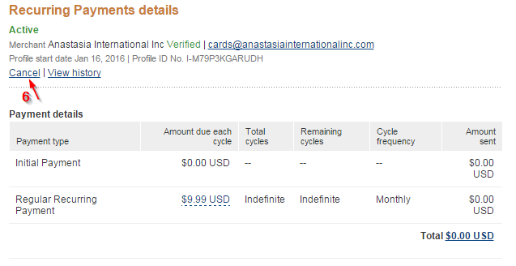
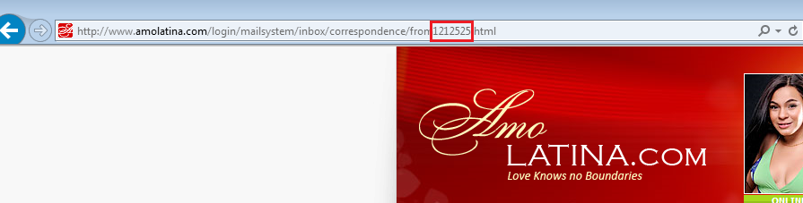

Membership & balance
Membership
By subscribing to membership for the first time at the discounted fee of only $2.99, you will receive all of the following benefits:
- 1) A one-time package of 20 Welcome Credits to thank you for your subscription. These credits can be used for any of the services we provide, depending only on your own preference
- 2) 10 FREE Live Chat sessions lasting 3 minutes each to help you begin communicating with the members of your interest. This package is worth 30 whole credits, based on the fact that it is an offer of 30 total minutes of chat
- 3) The ability to send unlimited Love Notes to the ladies whom you never corresponded with before
The 10 FREE Live Chat sessions and the ability to send unlimited Love Notes renews every month together with your subscription.
Free chats have been created as ice-breakers for the members whom you never communicated with but would like to get to know.
If you subscribed with PayPal, AmoLatina will be unable to cancel the recurring payment for you.
To cancel your automatic payment, please go to PayPal:
Go to www.paypal.com and log in to your account.
1. Click 'Profile' near the top of the page.
2. Select 'My money'.
3. In the 'My pre-approved payments' section, click 'Update'.
4. Filter by "Active" status
5. Select the merchant whose agreement you want to cancel and click 'Cancel'.
6. Click 'Cancel Profile' to confirm your request
7. Confirm the cancelation.

When going to your "profile" be sure to double click on the tab to open the full Profile page as you may not get all the options if you just hover you mouse over it. Once the page loads you will see the section that says 'My money'.
20 Welcome Credits are a one-time package to thank you for your subscription which is only added upon initial subscription.
Each following month you will receive 30 credits worth of services in 10 free 3-minute chats, ability to send unlimited Love Notes, purchase additional credits and check your account balance.
Credits operations
To check how many credits you have remaining in your account, please go to the main page "My account"
On left hand side you will see how many credits you have available.
To check how many credits you have remaining in your account, please go to the main page "My account"
On left hand side you will see how many credits you have available.
Payment questions
When your payment is not going through it may be due to one of the following reasons:
-
1. Your bank is blocking the transaction. AmoLatina is an international company that employs a number of payment merchants worldwide.
Some banks may require additional verification from the account holder when they see an international transaction.
When a transaction is declined by a member's bank, AmoLatina does not hold any of the funds. You may however see the declined transaction as pending and it will be released to your account depending on the internal policies of your bank.
Please contact your bank in order to authorize all further payments to AmoLatina. You will then be able to make a purchase on our website.
-
2. You recently made a purchase but have not spent any credits since. The system will prevent you from making an additional purchase in order to prevent multiple transactions made in error.
Once you are able to make purchases, as an alternative, you may purchase larger credit packages which will save you from topping up so often.
-
3. Additional verification is required by AmoLatina.
We work very hard to protect our members from fraudulent activity and as a safeguard may conduct checks on payments and transactions made on our website.
Please contact our Customer Support team who will look into the details of your purchase history and provide you with an explanation.
-
4. If you are having issues with PayPal they are usually caused by an authorization issue from PayPal side. If you receive the following error code, please, contact PayPal Customer Service to receive assistance.
The standard membership renewal rate is $9.99, and this is the amount that it will cost to renew your membership after the first month.
Upon subscribing we invite our members to review the Terms and Conditions of our monthly membership program.
The 10 FREE Live Chat sessions and the ability to send unlimited Love Notes renews every month together with your subscription.
$15.99 is the cost of 20 credits on AmoLatina.
Upon subscribing we invite our members to review the Terms and Conditions of our monthly membership program. Automatic top-up of 20 credits is initially set up on your account when you subscribe.
Automatic Purchasing is our option that allows you to stay in touch with the member of your preference, even when your credits run out in the middle of Live Chat or Camshare. It automatically purchases additional credits, required to continue the communication, so that your romantic conversation won't suddenly be cut off because you lack a few credits.
However, you always have the option to disable it by unchecking the box "Allow Automatic Purchasing" in the "My settings and Password" menu and then by pressing the "Save" button.
Services
Call Me
Five days before your preferred member's birthday you will receive a notification in your inbox. In order to get the 5 bonus minutes you need to click on the "receive 5 bonus minutes" link. Note that this offer will expire 7 days after her birthday. After selecting the bonus the minutes will be added automatically once you complete the reservation form.
To place a Reservation Phone Call please go to the Call Me part of the Services section.
You need to select your time zone, the date and time you wish to speak with your preferred member.
Please check that your local time and your time zone are set correctly before confirming your phone call.

It is also very important that you have the correct contact number indicated in the corresponding fields.
Kindly check the country code (for example, 1 for the USA, 44 for the UK etc.), your area code (3 digits only in this field) and your telephone number. You may also indicate an additional number we will be able to connect you on in the event that the primary phone number is unreachable.Please ensure that you have at least 100 credits in your account as otherwise you will not be able to place the reservation (with the exception of a repeat call to the member of your preference that is charged 70 credits).
The member's time will be set automatically depending on her location and you will be able to review it and set the most convenient time to suit you both.
The system will notify you that 100 credits will be deducted from your account for the first 10 minutes. Please note that each additional minute costs 10 credits, therefore if you wish to speak with your preferred member for longer than 10 minutes, it is always a good idea to top-up before the call takes place.
The member receives a notification and will have the option to accept the time you suggested or offer a new one.
You will be notified in both cases- if the member accepts your time or proposes a new one. If she proposes a new one, you can only accept it or cancel the call and place a new reservation. Note, that the notifications will be send to the email you indicated in your profile.
You will receive a call at the appointed time; the system will automatically connect you with your preferred member and the interpreter.
If you don't see your call in the active list of the Call Me section it means that it changed the status. You will be able to click on Archived Phone Calls and see the status of the call. We will be happy to look into it for you to find out exactly what changed or went wrong. Please contact our Customer Support team with your ID and we will be happy to assist you.
CamShare
If the member is online with her camera on and the quality of her internet connection allows using our premium Camshare service, you will see the option in the member's profile.
Simply click on the blue Camshare icon (as below) and await your member's response. Billing will start as soon as your member sends you a reply. Her video will be started automatically.

You will also be able to accept an invitation from the member.

Billing will start automatically, as soon as you accept the member's invitation.
One possible reason for the lack of signal from your camera is that there is another program already using your webcam while you are trying to use Camshare. Please try closing down all other programs apart from your browser and that should help.
Please, be aware that our Camshare service requires a high-speed internet connection on both yours and the member's end in order for you to see her large, HD video feed. If the member does not have a stable internet connection, she may not be able to see your video. We recommend trying later when the connection will be more stable.
Please also check that you have the latest version of Adobe Flash Player as this is required for all our video-related services.
Please make sure your camera is not being used by any other program, such as Skype as there is a flash feature that prevents multiple applications from accessing your webcam simultaneously. Please completely shut down any other applications that employ your webcam before attempting your next Camshare.
As well as the aforementioned software requirements, please ensure you camera is powered on and that you have enabled your video feed by clicking on the camera button at the bottom of the chat window. If you do not see this 'allow' button then, please, change your screen resolution to a number higher than 900. Find instructions here
It is also important to make a distinction between Live Chat with video and Camshare. All your current sessions in Live Chat have to be shut down before starting a Camshare, these are two different services and cannot run side by side.
Correspondance
If you are looking for a specific message from a particular member you can find it by doing one of the following:
-
1) Please click on the All letters link on any message of your Member in your inbox.

-
2) You can also find a message if you go to your sent mail box, locate any message you sent to your member and click on All letters.

-
3) If you are not able to locate messages from your member in the inbox or sent mail box, then you still have a third option. Click on the All letters link of any member. Using the address of your browser, please, replace the ID of the Member whose letters have appeared in the window with the ID of the Member whose letters you would like to read.

This Hello note is sent to the member when you add her to your Contact list.

This way the member will know that you viewed her profile and saved it to your list of selected contacts. She will have a chance to visit your profile in return to see if you could be a potential match.
This message is totally free of charge.
Once you have opened a letter and paid for it, you will not be charged again for reading it.
LiveChat
If you do not use some of the free chats in the month of your current subscription, they will expire when the next package of 10 free chats is added.
Why is the text blocked in Live Chat or letters?
According to the AmoLatina company policy and as required by IMBRA, the exchange of personal contact information such as e-mail addresses, telephone numbers and postal addresses is not allowed using our online services. Attempts to exchange such delicate information may get censored. This is only done for our members' own privacy and security.
In order to make such an exchange possible, we have created our specialized offline services. All members are able to exchange personal contact information safely and consensually between them in a live Phone Call that you can reserve using our Call Me service. Over many years, this method has proven to be most effective and is highly recommended.
Please note if you hold a US citizenship, before you are allowed to exchange contact information with the member of your choice, we will ask you to complete, sign and send us a Background form.
The videos on AmoLatina are high quality and so it takes time for them to load. If you have a slow Internet connection speed it will obviously take longer for the video to open. The video will not correctly play until it has fully downloaded.
If you are having other issues with a specific video we highly recommend you to upload the last version of Adobe Flash Player. Alternatively you can open the video in any other browser you have in your computer.
Please, remember that one minute of Live Chat costs 1 credit. One minute of Live Chat with Video costs 2 credits.
Premium smileys are charged 1 credit each.
To stop streaming please Click Stop Live Video, as below.

Note, that if you are using CamShare you will be charged 6 credits per minute.
The total cost of your chat will be based on the time you chatted and the extra options you used.
For example: If you had a chat for without video for 10 minutes and send 3 premium smileys you will be charged 13 credits.
In addition, you can send and receive photos in Live Chat and Camshare, the price is 15 credit per photo.
According to the AmoLatina company policy and as required by IMBRA, the exchange of personal contact information such as e-mail addresses, telephone numbers and postal addresses is not allowed using our online services. Attempts to exchange such delicate information may get censored. This is only done for our members' own privacy and security.
In order to make such an exchange possible, we have created our specialized offline services. All members are able to exchange personal contact information safely and consensually between them in a live Phone Call that you can reserve using our Call Me service. Over many years, this method has proven to be most effective and is highly recommended.
Please note if you hold a US citizenship, before you are allowed to exchange contact information with the member of your choice, we will ask you to complete, sign and send us a Background form.
Photo
Each photo you upload should be in .jpeg or .jpg format and less than 500KB in size. If a photo is in a different format or too large you may not be able to upload it.
We recommend using either Microsoft Image Editor or Microsoft Paint in order to reduce the size of the original image if that is necessary.
You can find detailed instructions on the following site
Enjoying the Private Photos of the member of your interest is completely free of charge, provided that you have exchanged Letters, had Live Chat or carried out a Camshare session with that member. Introduce yourself today by sending a Letter or by sharing time on Camshare or Live Chat. Thereafter, please browse the Private Photos for free.
Gifts
Yes, the Virtual Gift stays on your profile for 7 days, and you can view it as often as you like.
LoveNotes
A Love Note is an easy way to start communication with one of the members that has caught your interest. It is absolutely free for our subscribed members– simply go to the member's profile, find the "Love Note" icon, choose one of the cards we offer and click "Send for Free" before opting for any other feature on offer.
Bonuses & Discount
Bonuses & Discount
On Amolatina we love to keep our client satisfied. If you are a loyal member you will receive complimentary credits in your birthday.
On Amolatina we love to keep our client satisfied. If you are a loyal member you will receive complimentary credits in your birthday.
In addition you can receive 3 bonus credits up to three times before you need to purchase additional credits. You'll be eligible for the free credits multiple times in between topping up your account. For more details, please, check our news section
If you get some bonus minutes for a member's birthday you can activate them by clicking the appropiate link on the notification in your inbox. These bonus minutes will be automatically added to your account. As soon as the standard 10 minutes of a phone reservation are used. We also offer 20% discount on Flowers and Presents orders
Members Communication
Communication Rules
The AmoLatina Anti-Scam Policy can be found here
Safety Tips
- - Never send any money to another member.
- - Exchange contact information with a member only through our "Call Me" service.
- - Conduct video chats with your partner once in a while.
Scam and reimbursements
- - A member misidentifies himself/herself. (i.e., someone who uses another member's profile without permission to communicate with you). We will reimburse all credits incurred communicating with this member.
- - A member requests money or expensive gifts from you. We will reimburse all credits spent communicating with this member and ban the member permanently.
- - A member deliberately misrepresents some details in his/her profile: age, children, gender, marital status or language level. We will reimburse all credits you incurred communicating with this member and ban the member permanently.
- - Delivery of gifts or flowers ordered through the system does not take place. We will reimburse all credits incurred for the flower or gift delivery order.
Not a scam
- - Some mistakes occurred in the translation of a letter.
- - If a member doesn't answer all questions in an email.
- - If on any level of your communication, the member takes the decision to stop developing your relationship.
- - If a member has photos of relatives, friends, ex-partners and other personal info posted on any social network.
- - If a member wears rings on his/her fingers. Wearing rings does not mean a person is married, regardless of which finger it is on.
According to the AmoLatina company policy and as required by IMBRA, the exchange of personal contact information such as e-mail addresses, telephone numbers and postal addresses is not allowed using our online services. Attempts to exchange such delicate information may get censored. This is only done for our members' own privacy and security.
In order to make such an exchange possible, we have created our specialized offline services. All members are able to exchange personal contact information safely and consensually between them in a live Phone Call that you can reserve using our Call Me service. Over many years, this method has proven to be most effective and is highly recommended.
Please note if you hold a US citizenship, before you are allowed to exchange contact information with the member of your choice, we will ask you to complete, sign and send us a Background form.
If a member's behavior appears to breach our policies, review our rules and policies below to make sure the issue is something we'll investigate, and if so, report it. We would strongly recommend you to file a complaint if necessary. You can do this online by clicking on the following link.
We uphold a very strict Anti-Scam policy.
Any member on the site found to be in breach of any of the terms of the policy will promptly be removed from the site.
Please provide us with as much information as possible to support your claim; we will do our best to resolve the situation as quickly and completely as possible. We take complaints of this nature very seriously, and we would like to do everything we can to help you out.
Members interaction
AmoLatina employs a dedicated verification team that works hard to provide confirmed and updated information on each member, and regularly verifies their identities in order to avoid outdated information or any possible fraud.
The AmoLatina verification team checks each member's correspondence and immediately addresses any question of incorrect use of the AmoLatina mailing system. AmoLatina also incorporates an Anti-Scam Policy, a policy which leads the fight against scammers and online fraud.
The sincerity and honesty of the members is also ascertained by selective letter screening and regular personal interviews with each member.
You still have several opportunities to make sure you are talking to your selected member. Camshare and Live Chat with video give you peace of mind you require if any doubt arises.
Please note if you hold a US citizenship, before you are allowed to exchange contact information with the member of your choice, we will ask you to complete, sign and send us the Background form.
Mobile App
Mobile App
Through our android app you can exchange messages (Correspondence System), have Live Chats and Camshare sessions with the members of your preference.
Our IOs app at the moment offers only Live Chat services.
AmoLatina has launched a special app ( LDate) that you can find here
Please download the latest version of the app
If you already have it, please follow these steps:
- 1) Press your device's Menu button | select Settings (or System Settings).
- 2) Tap Application Manager (or Apps).
- 3) Tap the app icon of AmoLatina. Rezise
- 4) Tap Clear cache.
Category
My profile
You can submit up to 4 photos to your profile- 1 thumbnail and 3 full-sized photographs that will be seen in your profile.
To submit your photo for the catalogue please click on Upload Photo link and choose the file with the photo on your computer.
The photos can be in PNG, JPEG or GIF format and up to 10MB each.
You probably already have an account with us. Please, click Sign in and enter your email and password.
If you don't remember your password feel free to recover it by clicking the "Forgot password" link.
Please, enter your email and the password will be sent to your personal inbox.
Notifications
Please, check your spam or junk box for notifications from AmoLatina.
Additionally, we recommend adding our email address to the Safe Senders List of your personal email.
Your email provider may be preventing notifications from our domain.
Please contact our Customer Support team who will be able to confirm the information and reset the notifications system, if required.
???